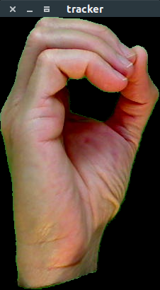

Our project aims to detect hand sign language (based on the American Sign Language system, ASL) from a captured image, and possibly extend it to videos, using image processing and machine learning techniques.
There are many different sign language standards being used all over the world. We have decided to pick ASL as it is one of the major and more popular forms of communication for deaf people in the USA and Canada.
The current sign language detection systems are trained to have a good precision on one setof symbols (For eg. a-g of the ASL alphabet) Sign language detection techniques aren’t restricted to language translation and can be extended to support other actions such as actions for a computer.
Besides this, we like the social impact of this project in improving communication and accessibility.
Initially, we studied research work that could provide us a basis for methods to extract the ‘Hand’ object from the background. Kakumanu et al [1] perform a review of various skin modeling and classification strategies based on color information in the visual spectrum. From the compared skin detection methods, Skin Probability Maps seems to be the quickest and has the best accuracy. We decided to experiment with this algorithm to isolate the hand.
Proceeding with the theme of skin detection; Starting with normalized RGB components, Gomez and Moralez [2] came up with a single rule to detect skin in images. The work finds an initial threshold to be used for Skin Probability Map which is more effective than other measures. We used this threshold value and tuned it (based on further experiments) to isolate the hand.
R. Collins et al [3] propose another way to extract the hand; through background subtraction. The algorithm is useful for detecting moving objects in a scene under controlled conditions. We used the Background Subtraction method mentioned to detect the hand by constraining our data such that the only moving object in it is the hand making the signs.
Finally, E. Stergiopoulou et al [4] present a combination of existing techniques, based on motion detection and a novel skin color classifier to improve segmentation accuracy which potentially works even on noisy backgrounds. We used the method combining image differencing with background subtraction with adaptive thresholds described in this paper.
After extract the hand, we need to select features for classification. We feel that the features used need to generalise well, and so we resorted to using standard features such as Gabor Filters, Histogram of Centroid Distances and SURF. For the purpose of classification, we have used standard machine learning algorithms like K-nearest neighbour (KNN), Support Vector Machine(SVM), Convolutional Neural Nets and Random Forest.
All the filters and learning algorithms are applied separately and the accuracies on the datasets have been measured to determine the best methods going forward.
After going through the literature and performing some initial tests, it was decided to divide the project into the following three stages.
Each subsequent section of this discussion describes the stages in more detail. Our target to is to make the system work with no specialized hardware. Thus, we use Integrated webcam to capture image and video input for testing.
Current testing has only be done on images taken under controlled conditions (same lighting, hand in the center of the image, black background), but we intend to extend it to images over different lighting conditions
All coding is done in MATLAB 2017a with Image Acquisition Toolkit
We made the following observations about the algorithms used:
| # | First Name | Last Name | Username |
|---|---|---|---|
| 1 | Mark | Otto | @mdo |
| 2 | Jacob | Thornton | @fat |
| 3 | Larry | the Bird |
Any one method for hand isolation does not seem to work well enough that we can feed the result to a classifier. Hence we have had to combine two methods for isolation and consider other methods. Skin Probability Mapping The result is dependent on the initial threshold values for color components. Which means this method will not generalize well for all skin tones. Also objects in the scene whose color is close to the skin color threshold act as noise. The algorithm is not robust to changes in lighting conditions since it works with hue and saturation.  Image differencing This method is useful only if the hand is moving, so other moving elements in the scene add noise. Background subtraction This method does not take into account changes in lighting in the scene due to movement. The approach is highly sensitive to the initial threshold and adaptation speed and the values we have used are empirically chosen. The background subtraction algorithm fails to extract the entire hand when the latter moves over background objects of a similar color
HOCD HOCD does not generalise well on new hands. For some fingerspelling gestures like ’m’ and ’n’ which have almost similar shape, HOCD would give a similar feature vector and hence, we would have a bad classification using only these features. Gabor Filters The feature extraction system is not invariant to rotation, scaling and translational changes. Scaling and translation can be compensated easily enough as soon as the hand has been correctly segmented. However, rotation differences are difficult to detect on the segmented hand and compensate and so it remains a problem. SURF and Bag of words It was reasoned out that these features are not suitable for actual implementation, because they fail to capture enough information from the images because of illumination differences playing a major role in different key-points extracted on train and test images.
We observed that CNN gives the best result followed by KNN , followed by SVM, followed by Random Forest.
CNN works very well if the background does not add any noise to the hand sign. It performs well (0.9+ accuracy) if the nature of the background is similar in training and test images. Any change in background from the training to the testing causes fall in accuracy (66%), i.e. CNNs do not generalize well.
The other classifiers depend heavily on the features which in turn depend heavily on the nature of the images. The current set of features we have experimented with are all susceptible to noise.
Feel free to email us to provide some feedback on our templates, give us suggestions for new templates and themes, or to just say hello!